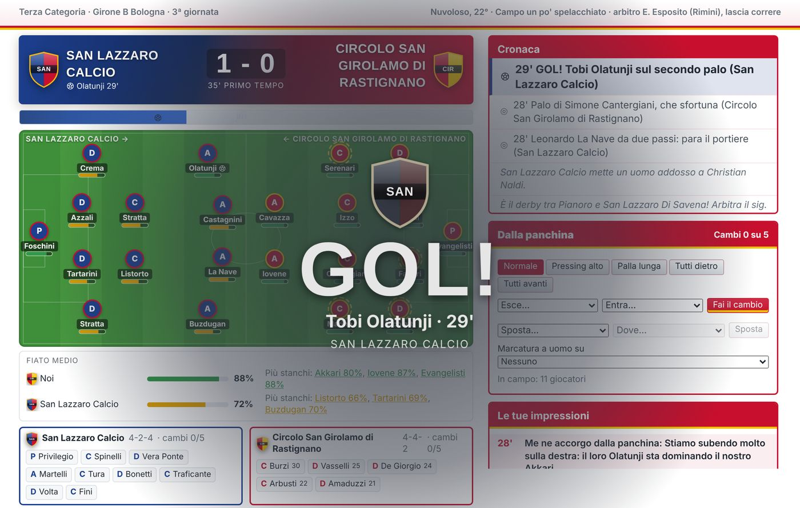

La partita dal vivo
Segui la gara minuto per minuto, con la cronaca e il campo che si muove. Se le cose vanno storte intervieni dalla panchina.
- Cambi e indicazioni durante la partita
- Velocità regolabile mentre si gioca
- Pagelle e commenti a fine gara
